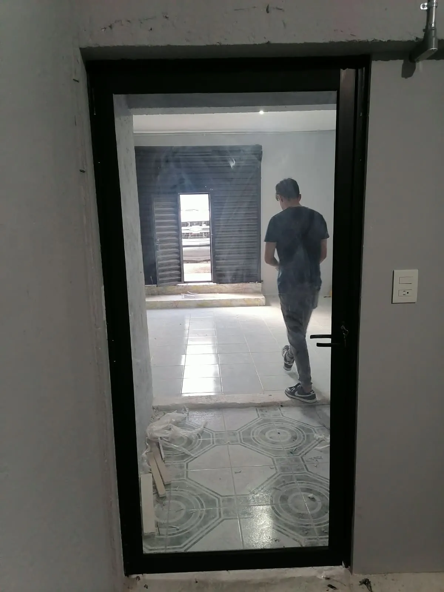
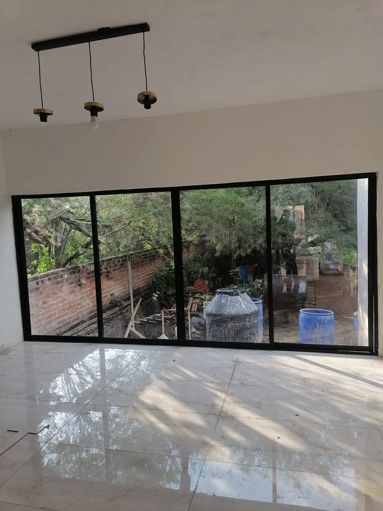
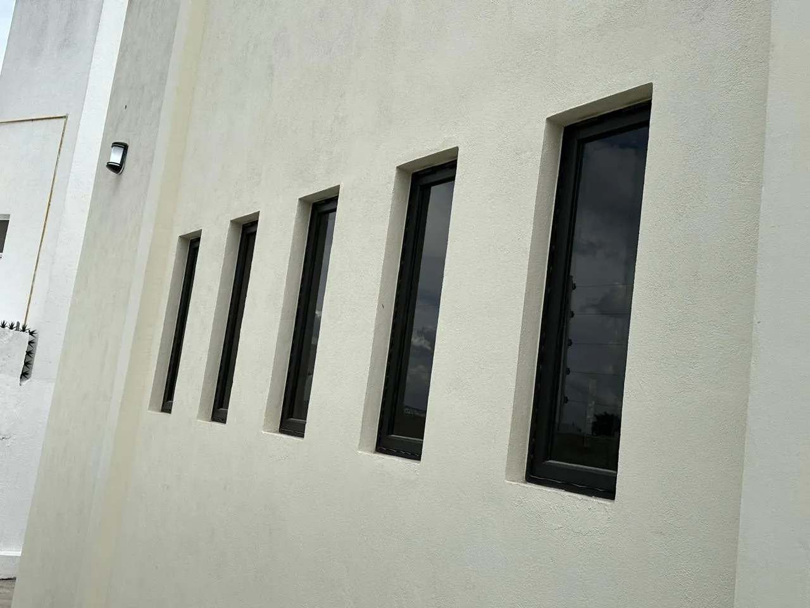
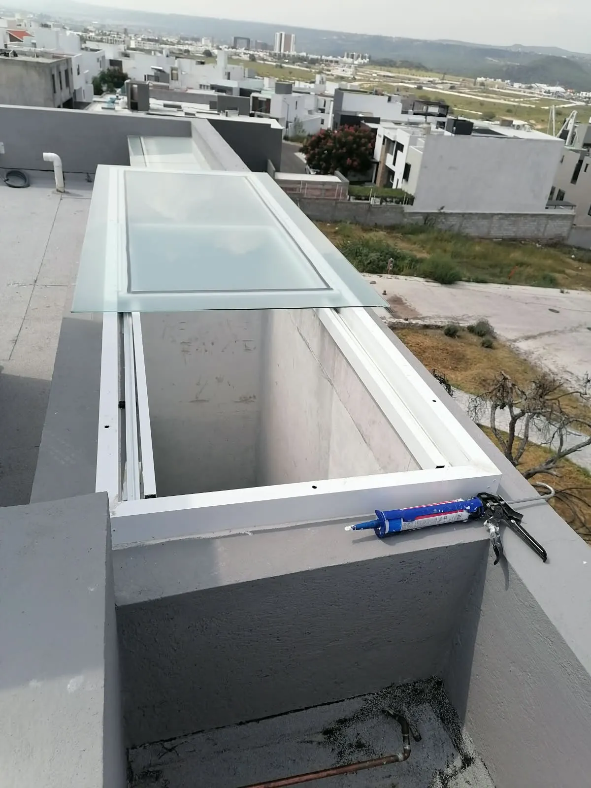
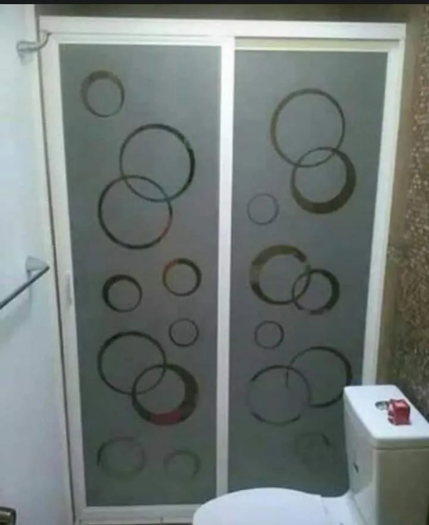
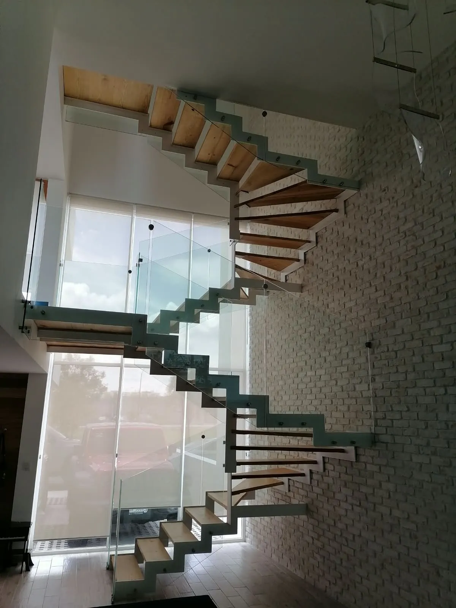
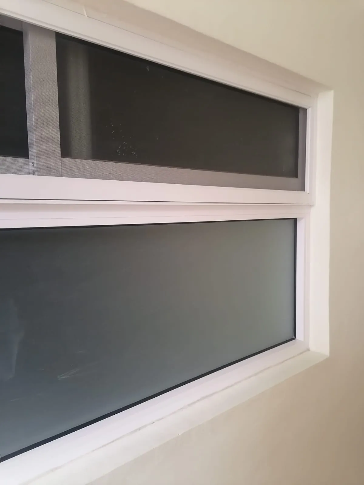

Fabricación e instalación a medida
Fabricamos ventanas a tu medida.
Vidrio y aluminio con el color y el acabado que tú elijas, fabricados e instalados por un solo equipo.

Fabricamos ventanas, puertas, domos, canceles de baño, fachadas, barandales de cristal, tragaluces y mamparas.
Todo en vidrio y aluminio
Una sola empresa para cada espacio de tu casa o negocio
Desde una ventana hasta una fachada completa. Medimos, fabricamos e instalamos, para que no tengas que coordinar a nadie más.




Fachadas y barandales
Ventanales, barandales de cristal y proyectos especiales a medida.
Ver modelosCatálogo de modelos
Obras reales como punto de partida. Elige la que te guste y la adaptamos a tus medidas, tu color y tu vidrio.
16 modelos
-
Puertas
Puerta corrediza de piso a techo
Aluminio negro y vidrio claro. Abre tu sala al jardín sin perder luz.
-
Puertas
Puerta abatible en aluminio negro
Marco firme, vidrio claro y una entrada que se nota desde la calle.
-
Puertas
Puerta con vidrio esmerilado
Privacidad sin perder luz natural, con bastidor fijo en la parte superior.
-
Puertas
Puerta de retícula
Cuadrícula en aluminio blanco para un estilo clásico y luminoso.
-
Ventanas
Ventana de arco
Forma especial hecha a medida para casas con carácter propio.
-
Ventanas
Ventanas verticales
Líneas delgadas que le dan ritmo y personalidad a la fachada.
-
Ventanas
Ventana corrediza de retícula
Cuadrícula en color para un acabado cálido y clásico.
-
Ventanas
Ventana proyectante
Se abre hacia afuera para ventilar incluso cuando llueve.
-
Domos
Domo sobre escalera
Luz natural que baja hasta el interior de la casa.
-
Domos
Domo en azotea
Vidrio sobre estructura de aluminio, sellado para resistir la lluvia.
-
Canceles
Cancel de baño corredizo
Vidrio decorado con círculos, fácil de limpiar y con privacidad.
-
Canceles
Cancel con vidrio grabado
Textura de cuadros que da privacidad en la regadera.
-
Fachadas y especiales
Escalera con barandal de cristal
Seguridad y transparencia en cada escalón.
-
Fachadas y especiales
Fachada de ventanas esbeltas
Una hilera de ventanas que ilumina sin restar privacidad.
-
Fachadas y especiales
Mueble de vidrio y aluminio
Gabinete a medida con puertas corredizas de vidrio.
-
Fachadas y especiales
Cuarto de servicio en aluminio
Puerta y ventanas en aluminio blanco, listas para el uso diario.
¿No ves lo que imaginas? Mándanos una foto o un dibujo y lo fabricamos.
Platícanos tu ideaTu pedido paso a paso
Diseña tu pedido en 2 minutos
Responde unas preguntas rápidas y ve cómo queda en tiempo real. Así llegamos a la cotización con el color, el aluminio y el vidrio que ya elegiste.
Cómo trabajamos
De tu idea a la instalación, sin sorpresas
Un solo equipo te acompaña de principio a fin. Tú decides, nosotros nos encargamos del resto.
Estoy listo, agendemos la medición-
Cuéntanos qué necesitas
Por WhatsApp o con el configurador. Si tienes fotos o un dibujo, mejor: nos ayudan a entender tu espacio.
-
Medimos en tu espacio
Confirmamos las medidas en sitio antes de fabricar, porque una pieza a medida solo funciona si la medida es exacta.
-
Fabricamos tu pieza
Cortamos los perfiles, armamos el marco y colocamos el vidrio que elegiste, con el acabado que acordamos.
-
Instalamos y revisamos contigo
Colocamos, sellamos y probamos el funcionamiento contigo presente. Te entregamos todo funcionando.
Materiales que se sienten bien y duran
Aluminio resistente, vidrio para cada necesidad y un sellado cuidado. Esto es lo que puedes elegir.
6
Acabados de aluminio
No se oxida como el hierro y casi no pide mantenimiento. Agua y jabón neutro bastan para dejarlo como nuevo.
- Natural
- Blanco
- Negro
- Champagne
- Bronce
- Madera

Vidrio esmerilado
Entra la luz, no las miradas.
4
Tipos de vidrio
Claro, esmerilado, tintado y reflectivo.
Seguridad para tu familia
Templado
Más resistente que el vidrio común. Si se rompe, lo hace en piezas pequeñas.
Laminado
Dos vidrios unidos por una capa intermedia. Si se rompe, los fragmentos quedan pegados.
Obras que hablan solas
Fotos reales de trabajos entregados. Desliza para recorrerlas.
Novedades y consejos
Noticias y guías para decidir mejor
Novedad
Ya puedes diseñar tu pedido en línea
Elige producto, aluminio, color y vidrio, escribe tus medidas y envía todo por WhatsApp en un minuto.
Guía
Cómo elegir el color de tu aluminio
Guía
Templado o laminado: ¿qué vidrio necesitas?
Guía
Domos: luz natural sin filtraciones
Preguntas frecuentes
Lo que más nos preguntan antes de empezar. Si la tuya no está, escríbenos.
¿Todo se fabrica a la medida?
Sí. Cada ventana, puerta, domo o cancel se fabrica con las medidas exactas de tu espacio, en el aluminio, color y vidrio que elijas.
¿Ustedes toman las medidas?
Sí. Puedes enviarnos tus medidas aproximadas para cotizar, y antes de fabricar las confirmamos en tu espacio.
¿Incluye instalación?
Fabricamos e instalamos nosotros mismos. En tu cotización te indicamos qué incluye cada pieza para que no haya sorpresas.
¿Cuánto tardan en entregar?
Depende del tamaño, el material y la cantidad de piezas. Te damos una fecha estimada junto con la cotización.
¿Qué diferencia hay entre vidrio templado y laminado?
El templado es más resistente y se rompe en piezas pequeñas. El laminado une dos vidrios con una capa intermedia, y si se rompe los fragmentos quedan pegados.
¿Llegan a mi zona?
Escríbenos tu ciudad o colonia por WhatsApp y te confirmamos la cobertura en el momento.
Hablemos
Estoy listo para empezar mi proyecto
Cuéntanos qué necesitas y te respondemos por WhatsApp con una propuesta clara. Sin compromiso.
-
WhatsAppEscríbenos por WhatsApp
-
FacebookVidrio y Aluminios Moreno
-
Cobertura
Escríbenos tu ciudad o colonia y te confirmamos.